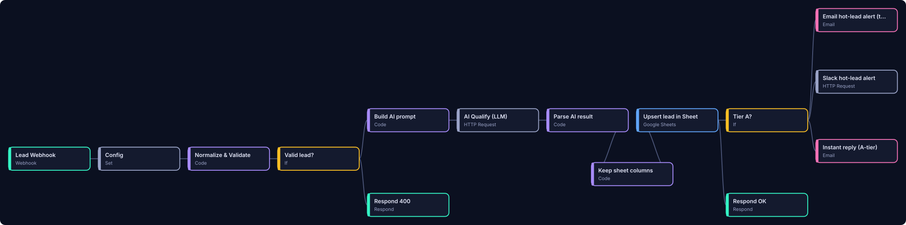

Demo build, no clientReal workflow code
AI Ops Agent: every lead answered, scored and followed up
Send an enquiry to Acme Growth Studio, a made-up marketing agency. Each step below is the real JavaScript from our 7-workflow n8n kit, running in your browser and wired the same way the n8n workflows are. Watch the lead get cleaned up, scored A/B/C/spam, saved to the CRM sheet with no duplicates, and followed up until it replies.
- RealThe logic. Field mapping and validation, the exact AI prompt with its strict JSON contract, the parsing and checking of the model's reply, the rule-based fallback scorer, tiering, the follow-up cadence, reply/STOP detection, the daily report and the error alert all come from the Code nodes in Lead Autopilot v1.1 and are copied unchanged (
nodes.js). - SimulatedNo AI model is called and no key is used. By default the "AI provider" is unreachable, so you see the workflow's real outage path: the rule-based scorer. You can also paste a hand-written example of a model reply to see how the contract is checked. Google Sheets, Slack and email are simulated in the page. Nothing is sent anywhere.
- SampleThe agency, the people and the companies are fictional, and the email addresses use example domains.
- No client has used this yet, so there are no client results. AI tools helped write the kit's code and this page.
1. Send a lead
Or post raw webhook JSON (any form builder's field names)
2. What ran, node by node
Workflow 01 · click a step to see its exact output.
3. The CRM sheet in your browser
In the kit this is the owner's Google Sheet, upserted by email, so a repeat enquiry updates the row instead of adding a second one. Send the same lead twice to check.
4. Let time pass
Slack simulated
Email outbox simulated
How it's wired drawn from the real workflow files

Wide diagram: scroll sideways on a phone. Seven workflows in total: intake, follow-ups, replies, daily report, monthly re-engagement, error alerts and a test-lead sender.
Tested from the kit's test report (26 Oct 2026)
Not covered by those tests: real Google, SMTP, IMAP, Slack and LLM accounts, or scoring quality with a real model. Those depend on the buyer's accounts and are checked at setup.
Get the kit, or have it built
Lead Autopilot is sold as a self-serve n8n kit. If you came from a proposal, reply there to have it set up on your own accounts.
Lead Autopilot on Gumroad